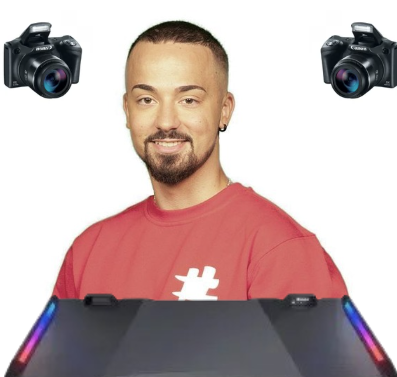

| Plataforma | Nome na Plataforma | Ano que comecou |
|---|---|---|
| YouTube | Tiagovski / @tiagovski555 | 2010 |
| Instragram | @tiagovski555 | 2014 |
| X | @Tiagovski555 | 2014 |
| Twitch | @tiagovski555yt | 2016 |
| TikTok | @tiagovski555yt | 2019 |
SOBRE
Criador de conteúdo em forte expansão no ecossistema digital, com foco em entretenimento, lifestyle urbano e tendências da cultura jovem. Especialista em gerar conexão direta e conversão com a Geração Z e Millennials através de uma linguagem autêntica, estética apurada e forte apelo visual.
ALCANCE DE
PLATAFORMAS
Instagram• Foco: Diário visual, streetwear, bastidores e interação diária via Stories.
• Entregáveis: Reels, Posts no Feed, Stories Sequenciais e Transmissões ao Vivo.
TikTok
• Foco: Conteúdo de alto potencial de viralização, tendências, humor e vídeos curtos de estilo de vida.
• Entregáveis: Vídeos curtos nativos com integração orgânica da marca.
YouTube
• Foco: Vlogs, cobertura de eventos e produções de longa duração.
• Entregáveis: Integrações de marca (30s-60s), vídeos dedicados e product placement.
PERFIL DA AUDIÊNCIA (DEMOGRAFIA)
Faixa Etária Predominante: 16 a 28 anos (Geração Z e Jovens Adultos).
Interesses
Principais: Moda e streetwear, eventos culturais, música urbana, tecnologia, viagens e produtos de
lifestyle. Comportamento de Consumo: Público com alto índice de adesão a recomendações diretas,
engajado
em
lançamentos e focado em tendências digitais.
DIFERENCIAIS COMPETITIVOS
Alta Taxa de
Engajamento:
Média de
interações por publicação superior aos padrões da categoria de entretenimento. Integração Orgânica:
Capacidade de inserir produtos e marcas no conteúdo do dia a dia sem perder a naturalidade ou a
credibilidade com o público.
Produção de Conteúdo Adaptável: Agilidade na criação de formatos
específicos
para o tom de voz e os objetivos da marca parceira.
MODELOS DE PARCERIA & ENTREGÁVEIS
Ações
de Curto
Prazo:
Campanhas pontuais, lançamentos de produtos e divulgação de promoções via Reels/TikTok e Stories.
Presença
em Eventos: Presença VIP, cobertura ao vivo em redes sociais e ativações de marca in loco.
Embaixador de
Marca (Longo Prazo): Representação contínua da marca em todas as redes, produção de conteúdo
exclusivo e
uso
continuo de produtos/serviços.
CONTATO COMERCIAL
Email Profissional:
- Tiagovksi@gmail.com
Assessoria / Management: https://tiagovski.com/